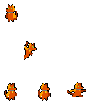
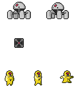

Chmup The Dog
2019 - ?
- Projet personnel
Chmup, chien fidèle aux pouvoirs télékinésiques, part à la recherche de son maitre fait prisonnier dans un repaire de scientifiques.
Ce projet personnel, jeu encore à l’état de prototype, est une sorte de souvenir nostalgique de mes heures passées à jouer. Il est né d’une envie de passer du côté de la production des jeux vidéos, de l’autre coté de l’écran.


Maquette
QD : se déplacer
S : glisser
SPACE : sauter
↑ ↓ : modifier la luminosité
R : réinitialiser
@ All right reserved @